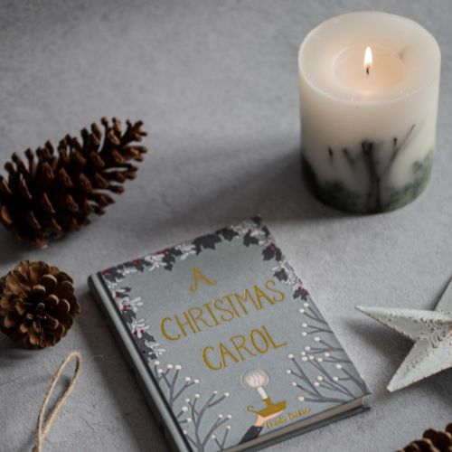

Libros para regalar en San Valentín
Publicado el 14 de febrero de 2023
El día de San Valentín es una oportunidad perfecta para demostrarle a tu pareja cuánto la quieres. ¿Qué mejor manera de hacerlo que con un libro que realmente le guste? Aquí te presentamos algunas opciones que pueden funcionar:
- Orgullo y prejuicio de Jane Austen
- Cien años de soledad de Gabriel García Márquez
- El amor en los tiempos del cólera de Gabriel García Márquez
- El cuaderno de Noah de Nicholas Sparks
Más info.

Libros para leer en Navidad
Publicado el 20 de diciembre de 2023
La Navidad es una época del año en la que todos buscamos pasar tiempo con nuestros seres queridos y relajarnos. ¿Qué mejor manera de hacerlo que con un buen libro? Aquí te presentamos algunas opciones que te pueden gustar:
- Cuentos de Navidad de Charles Dickens
- El Grinch de Dr. Seuss
- Un cuento de Navidad de Truman Capote
- El árbol de Navidad de Charles Dickens
Más info.
Top 5 libros de autoayuda
Publicado el 1 de enero de 2024
La autoayuda es un género literario que se enfoca en ayudar a las personas a superar sus problemas y alcanzar sus objetivos. Aquí te presentamos los 5 libros de autoayuda que consideramos imprescindibles:
- Los siete hábitos de la gente altamente efectiva de Stephen R. Covey
- Piense y hágase rico de Napoleon Hill
- El poder del ahora de Eckhart Tolle
- El monje que vendió su Ferrari de Robin Sharma
- El arte de amar de Erich Fromm
Más info.